Tripods & Stabilisation
Sharp photographs start with a steady camera. Our tripods and stabilisers hold the frame still — for long exposures, smooth video, and shots that stay crisp at any shutter speed.
Why stabilisation matters
- Eliminates camera shake in low light
- Keeps video smooth and professional
- Frees you to compose the shot properly
Book a session: 89190 02486Enquire online
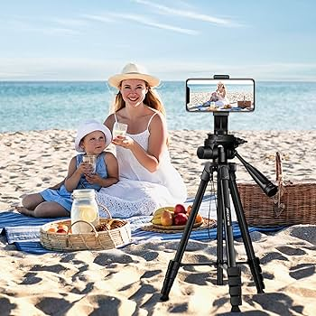
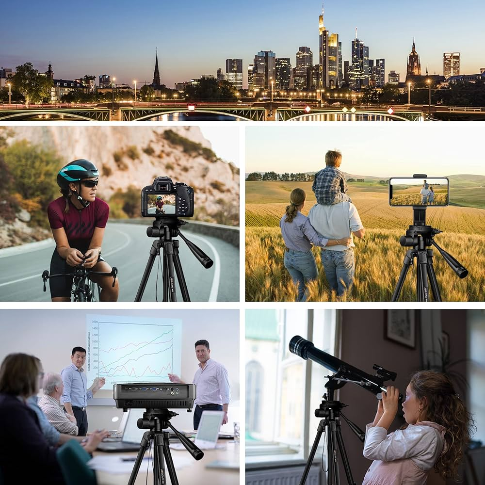
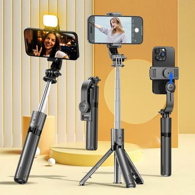
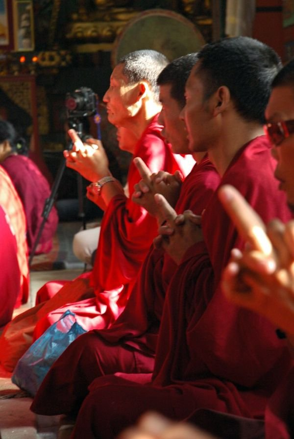
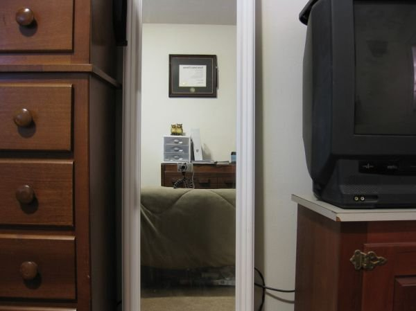
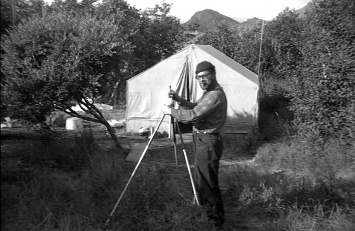
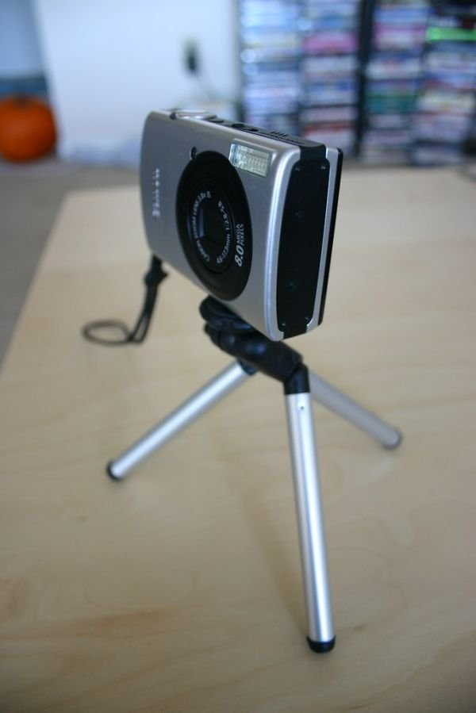
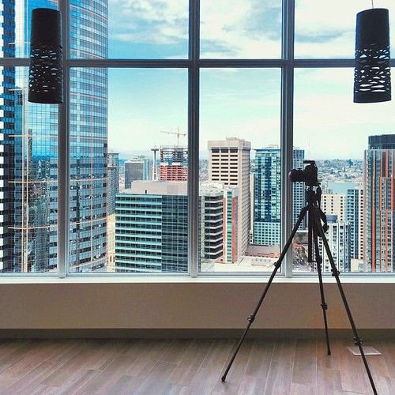
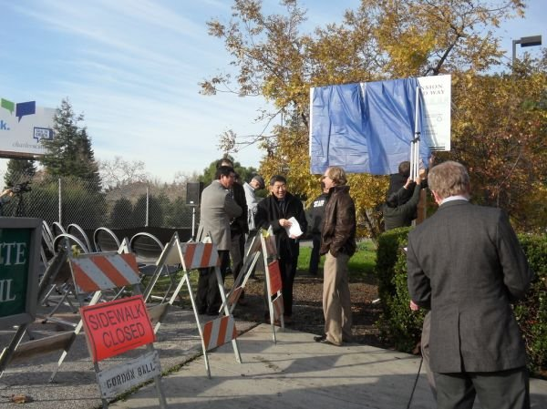
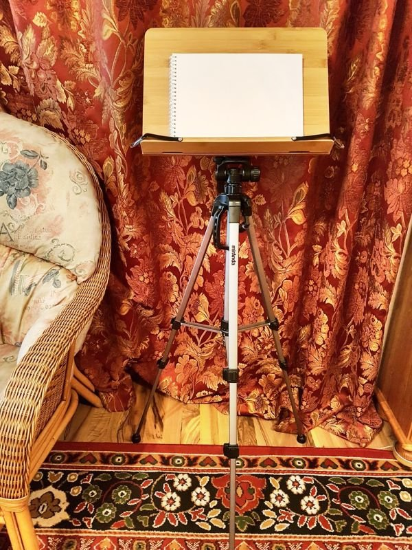
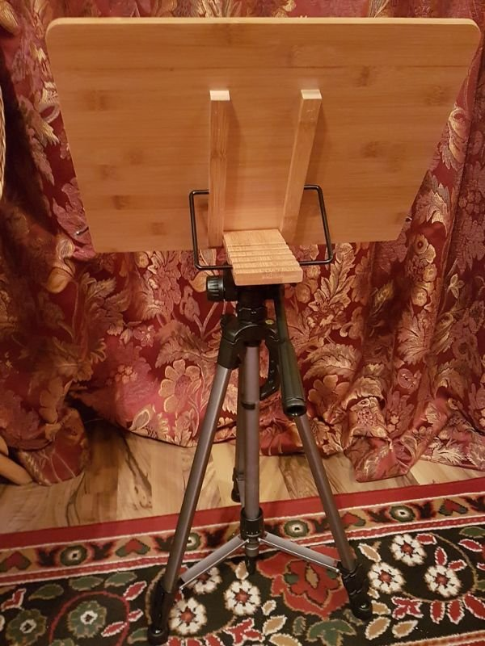
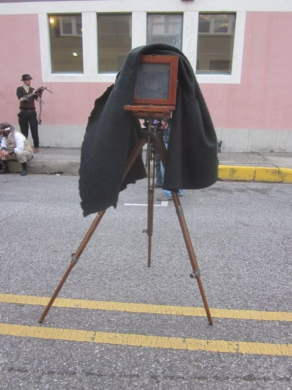
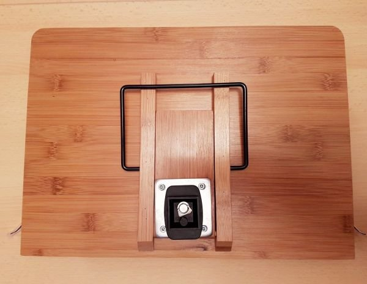
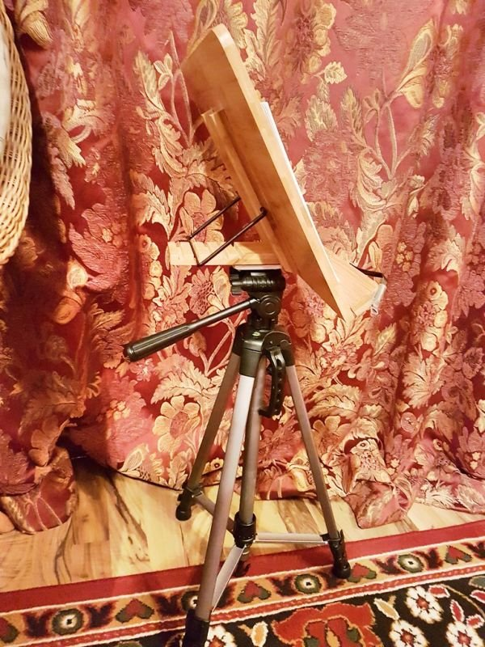
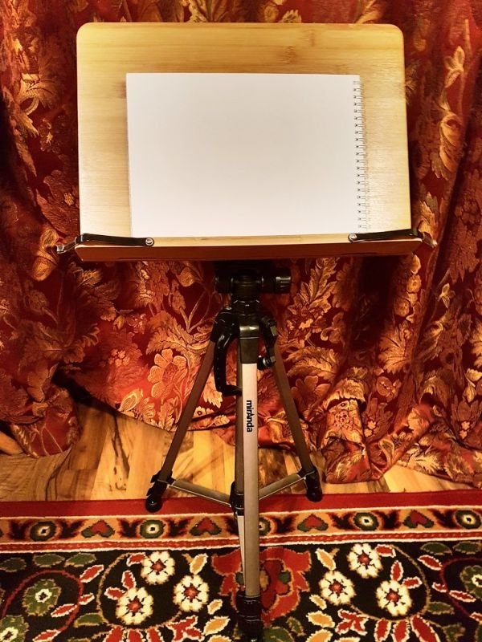
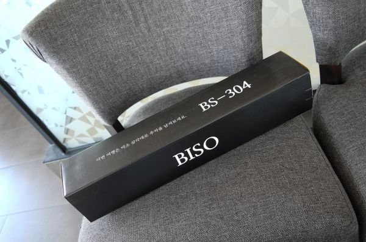
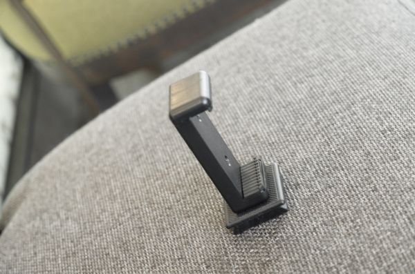
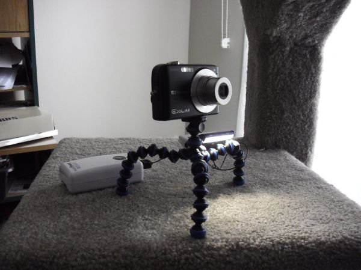
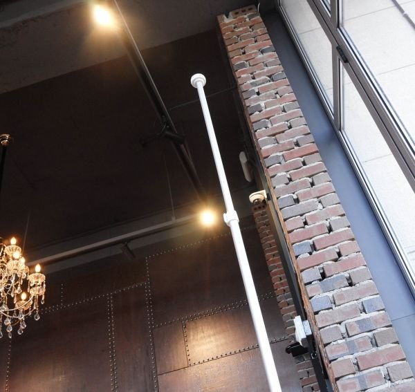
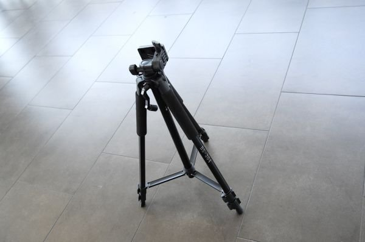
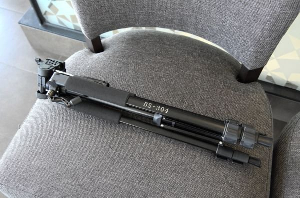
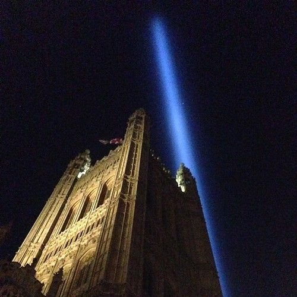
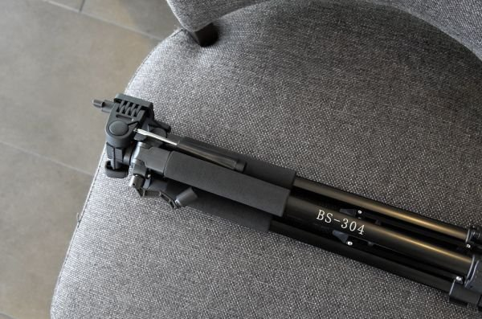
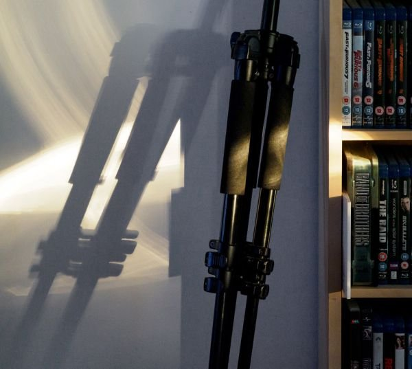
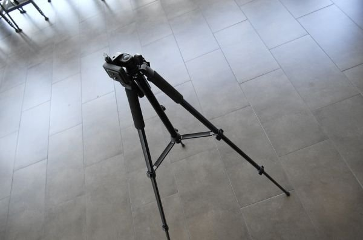
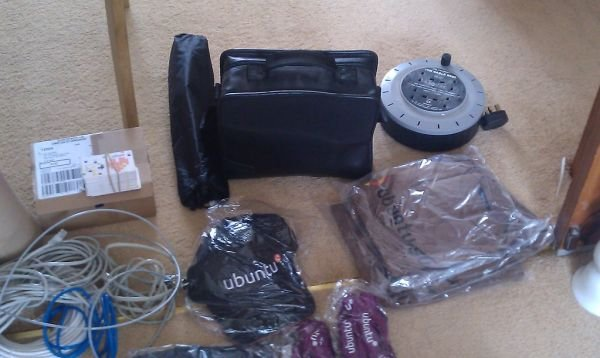
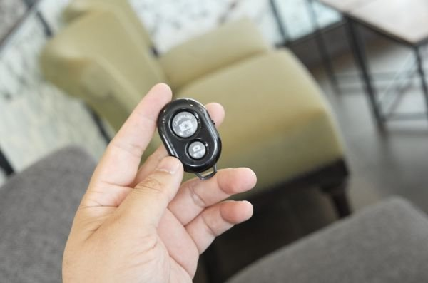
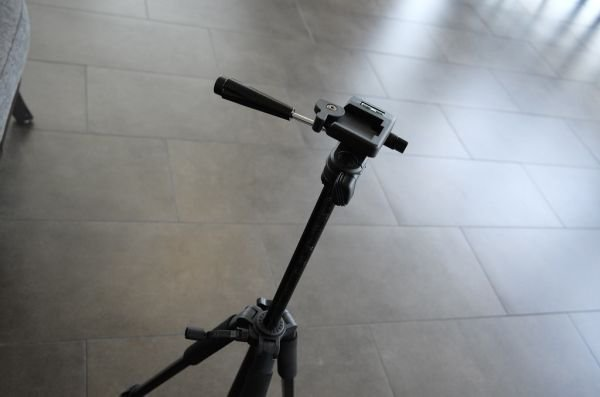
40 photos in this collection. Select any photo to view it larger.